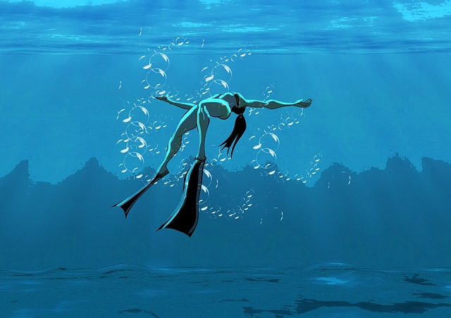

Choi Jian – 최지안

- 2007年： 「움직임의 그림자（動きの影）」展（ノヘン・アートスペース）参加
- 「하늘의 선（空の線）」プロジェクト参加（ハンリョン彫刻連盟）
- 2008年： 初個展「조용한 파편（静かな断片）」開催（ミリュン・アートホール）
- ミリュン現代彫刻奨励賞 受賞
- 2009年： 「흐름과 구조（流れと構造）」グループ展（ノヘン・ギャラリーリム）
- アートコレクティブ「N.O.V.A」結成、共同制作を開始
- 2010年： 「빛의 흔적（光の痕跡）」個展（モウォン・コンテンポラリー）
- 金属と樹脂を組み合わせた新シリーズ「Resonance Forms」発表
- 2011年： ルオ国際アートプロジェクト参加「공간의 의미（空間の意味）」
- 2012年： 「기억의 표면（記憶の表面）」展（モウォン・セランギャラリー）
- ノヘン美術館 企画展示「Constructed Silence」参加
- 2013年： 大規模インスタレーション「벽의 언어（壁の言語）」を発表（ルオ・アートパーク）
- 2014年： ハンリョン現代芸術賞 受賞
- 2015年： 「시간의 틈（時間の隙間）」シリーズ制作開始
- 「흔들리는 경계（揺らめく境界）」展（ミリュン・デザインホール）出展
- 2016年： モウォン国際アートフェスティバル 招待作家
- 「불완전한 형태（不完全な形）」展 共同展示（ノヘン・文化空間ウィル）
- 2017年： 大型屋外作品「Layered Breath」設置（ハンリョン市文化広場）
- 2018年： 個展「Echo Form」開催（モウォン・セランギャラリー）
- 2019年： 「都市の記憶」展（ノヘン現代美術館）参加
- 2020年： Studio EUNO にて作品発表「기억의 층（記憶の層）」
- 架空国ルオ共和国にてレジデンス参加（Luo Sculpture Residency）
- 2021年： 「Silence in Motion」展（ルオ・コンテンポラリー）
- ノヘン国際アートフェア 審査員特別賞 受賞
- 2022年： 個展「시간의 틈 사이에서（時間の隙間の中で）」開催（モウォン・セランギャラリー）
- 2023年： 「Reconstruction of Silence」展（ルオ現代芸術センター）
- 大型作品「Fractured Light」制作
- 2024年： Studio EUNO 特別展示「빛의 밀도（光の密度）」出展
- 映像作品「Horizon of Breath」発表（EUNO Screen）
- 2025年： 個展「숨의 파동（呼吸の波動）」開催（Studio EUNO 2F／ソウル特別市・麻浦区）